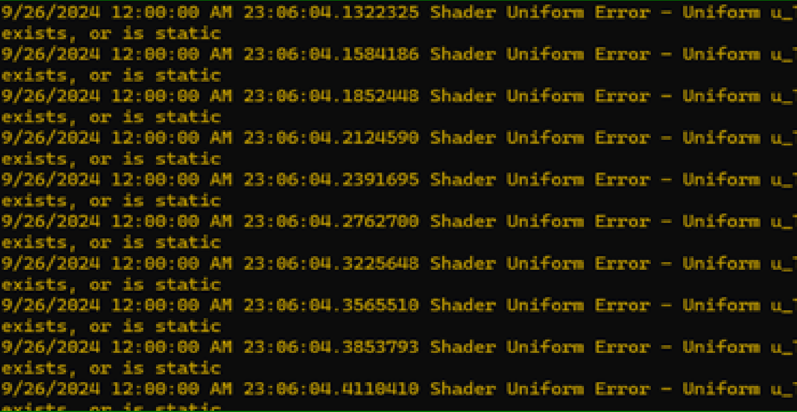

I know I needed the customisable and most importatnly assynchronous Logger for my project. So I created one. It works thanks to Monitor.Wait and Monitor.Pulse. It has an empty message queue, where it stores information about messages. When this queue is empty it waits, but when message comes, it pulses the waiting thread to do it's job and write messages using given TextWritter. Other than that, the logger is customisable with LoggerSettings structure. You can change message color and what messages are shown. When using, the user is required to call Stop after finishing. Otherwise the program will not stop.
